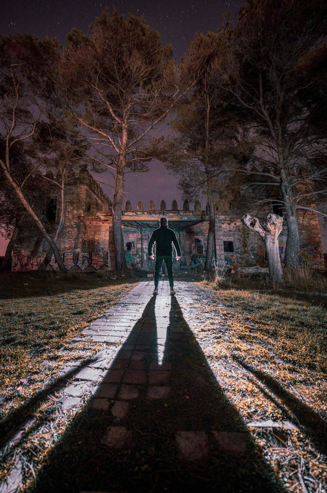
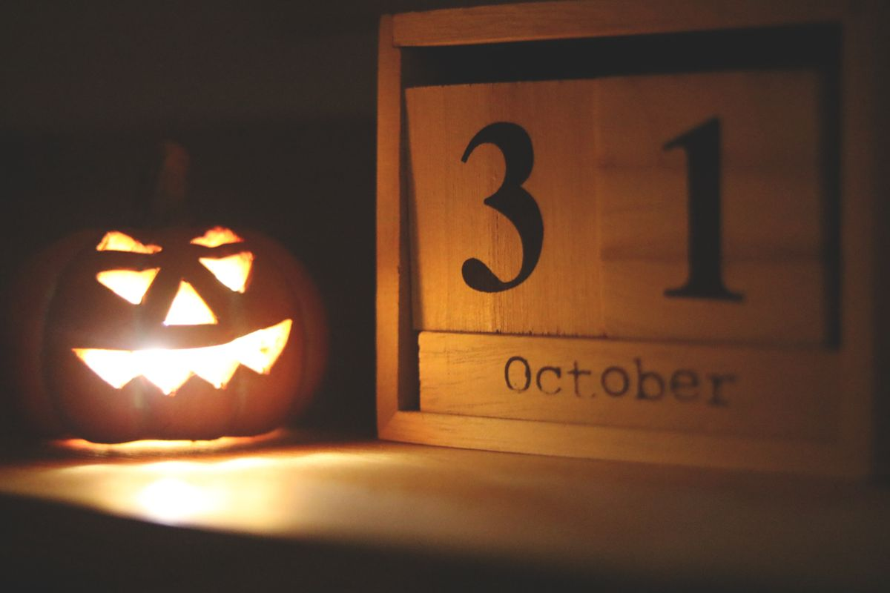

Jelang Halloween tahun ini, ada satu video YouTube Indonesia yang meledak lebih cepat dari biasanya. Video berjudul PULANG - KHW PART 400 dari Nadia Omara mencatat hampir 40 juta penayangan pada Kamis 29 Oktober 2026, empat hari setelah diunggah. Angka itu dicatat KapanLagi.com dalam liputannya tentang video tersebut.
Nadia Omara dikenal sebagai kreator konten horor dengan segmen Kisah Horor Wawak, disingkat KHW, tempat ia membawakan cerita kiriman penonton. Episode ke-400 ini disebut spesial, dan ternyata penonton sepakat: empat hari, hampir 40 juta kali ditonton.
Kenapa Video Berdurasi Nyaris 3 Jam Bisa Sebesar Ini
Durasi video ini sekitar 2 jam 41 menit. Di era video pendek, catatan 40 juta penayangan untuk video sepanjang itu jelas tidak biasa. Nadia membawakannya dengan gaya bercerita yang runtut: kisah kiriman penonton yang ia sampaikan dengan penekanan di bagian yang menegangkan, sehingga penonton ikut terbawa emosi tokohnya. Kalau dihitung kasar, rata-rata videonya ditonton sekitar 10 juta kali per hari sejak diunggah.
Momennya juga pas. Halloween jatuh pada 31 Oktober, dua hari setelah video ini viral. Buat yang butuh tontonan seram untuk malam akhir pekan tanpa harus keluar rumah, video ini sedang ramai dibicarakan sehingga mudah ditemukan di kanal YouTube Nadia Omara.
Syutingnya di Rumah Kosong, Bukan Studio
Satu hal yang membuat episode ini berbeda adalah lokasinya. Nadia biasanya merekam di studio, tapi untuk PULANG ia memilih sebuah rumah kosong yang suasananya mencekam. Sebagai episode spesial ke-400, pilihan lokasi ini terasa seperti pernyataan: cerita yang dibawakan pantas dapat panggung yang lebih menyeramkan.
Lokasi itu menambah lapisan horor tersendiri. Cerita mistis yang dibacakan terdengar lebih hidup ketika disampaikan dari tempat yang benar-benar kosong dan gelap. Buat konten horor, lokasi seperti ini bekerja dua arah: penonton ikut tegang, dan cerita yang dibacakan terasa lebih nyata. Suasana tempatnya saja sudah cukup untuk membuat penonton merinding sebelum ceritanya dimulai.

Inti Cerita PULANG: Kematian Mbak Santi
Video ini mengangkat kisah kiriman tiga narasumber bernama Rizki, Fajar, dan Dimas. Ketiganya mengirimkan potongan kisah yang kemudian dirangkai Nadia menjadi satu alur utuh. Inilah yang membuat PULANG terasa seperti film pendek horor, bukan sekadar cerita kiriman biasa.
Ceritanya berpusat pada keluarga Mbak Santi, suaminya Mas Edo, dan putri mereka Tata. Semua nama tokoh, tanggal, dan lokasi disamarkan demi privasi. Dari luar keluarga ini tampak berkecukupan, tapi Santi menyimpan persoalan rumah tangga yang serius, termasuk dugaan kekerasan dari Edo yang pernah ia ceritakan kepada sahabatnya.
Situasi berubah total ketika Santi meninggal dunia. Kematian itu awalnya disebut bunuh diri, tapi sejumlah kejanggalan membuat orang-orang terdekatnya mempertanyakan apa yang sebenarnya terjadi. Ketegangan naik ketika dugaan keterlibatan Edo dalam praktik pesugihan mulai terungkap, dan Santi disebut berkaitan dengan rencana tumbal dalam praktik itu.
Menjelang akhir cerita, Edo disebut mengakui telah membunuh istrinya ketika Santi hendak pergi membawa Tata setelah mengetahui rahasia pesugihan tersebut. Karena Santi meninggal sebelum rangkaian ritual selesai, Tata disebut menjadi calon tumbal pengganti. Edo menolak menyerahkan putrinya, tapi keputusan masa lalunya justru menjeratnya pada konsekuensi mengerikan.
Menjelang akhir, Edo digambarkan diliputi penyesalan. Ia meminta aset yang diperoleh lewat pesugihan disumbangkan, sementara rumah yang dibangun bersama Santi diserahkan kepada Tata. Setelah Edo meninggal, surat pengakuannya membantu keluarga memahami kejadian sebenarnya. Tata kemudian hidup bersama Fajar dengan harapan yang lebih baik. Kesimpulan ceritanya menyoroti keserakahan, pengkhianatan, dan penyesalan atas pilihan yang menghancurkan keluarga sendiri.
Catatan Penting: Ini Cerita Kiriman, Bukan Berita
Satu hal yang perlu kamu ingat sebelum menonton. KapanLagi.com menegaskan bahwa ini adalah cerita yang diterima kreator dan tidak berarti seluruh peristiwanya telah terverifikasi secara independen. Jadi, nikmati video ini sebagai tontonan horor, bukan sebagai catatan kejadian nyata.
Pesan moralnya pun tetap relevan untuk kehidupan nyata. Kekerasan bukan solusi untuk masalah rumah tangga, dan keputusan yang didorong keserakahan bisa berdampak panjang pada orang-orang yang tidak bersalah. Kalau kamu atau orang terdekatmu mengalami kekerasan dalam rumah tangga, jangan diam. Cari bantuan ke layanan perlindungan yang tersedia di daerahmu.
Penutup
Fenomena PULANG menunjukkan bahwa cerita yang dibawakan dengan serius masih punya tempat di YouTube Indonesia. Video sepanjang ini biasanya butuh komitmen untuk ditonton sampai habis, tapi angka 40 juta membuktikan penonton masih mau duduk lama untuk cerita yang bagus. Empat hari, hampir 40 juta penayangan, dan momennya pas dengan Halloween. Kalau kamu belum menonton, akhir pekan ini bisa jadi waktu yang tepat. Cari video berjudul PULANG - KHW PART 400 di kanal YouTube Nadia Omara, siapkan camilan, dan jangan menonton sendirian kalau kamu penakut. Kalau kamu sudah menonton, ceritakan bagian paling seram versimu di kolom komentar video itu. Siapa tahu ceritamu jadi bahan episode KHW berikutnya.

Sumber dan Info Resmi
Angka dan detail cerita di artikel ini merujuk ke sumber berikut, yang sudah diverifikasi isinya:
- KapanLagi.com: Video YouTube Nadia Omara Viral, Ditonton Hampir 40 Juta Views dalam Beberapa Hari (29 Oktober 2026): episode spesial ke-400 KHW berjudul PULANG, durasi sekitar 2 jam 41 menit, syuting di rumah kosong, kisah kiriman Rizki, Fajar, dan Dimas, serta penegasan bahwa cerita ini tidak berarti seluruh peristiwanya telah terverifikasi secara independen.